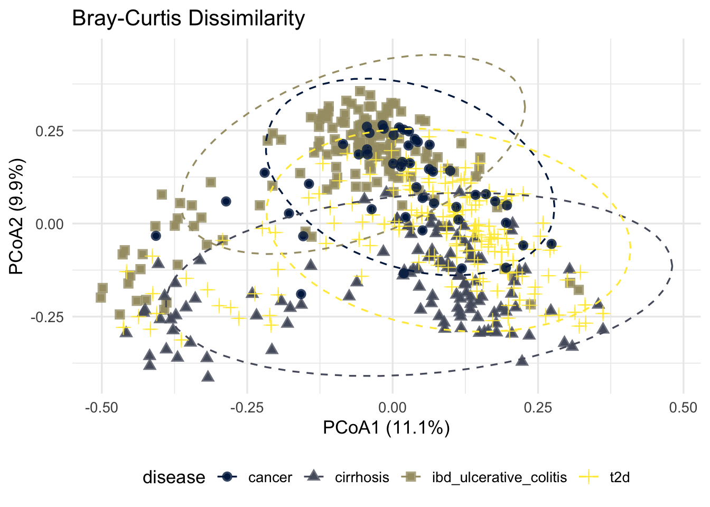
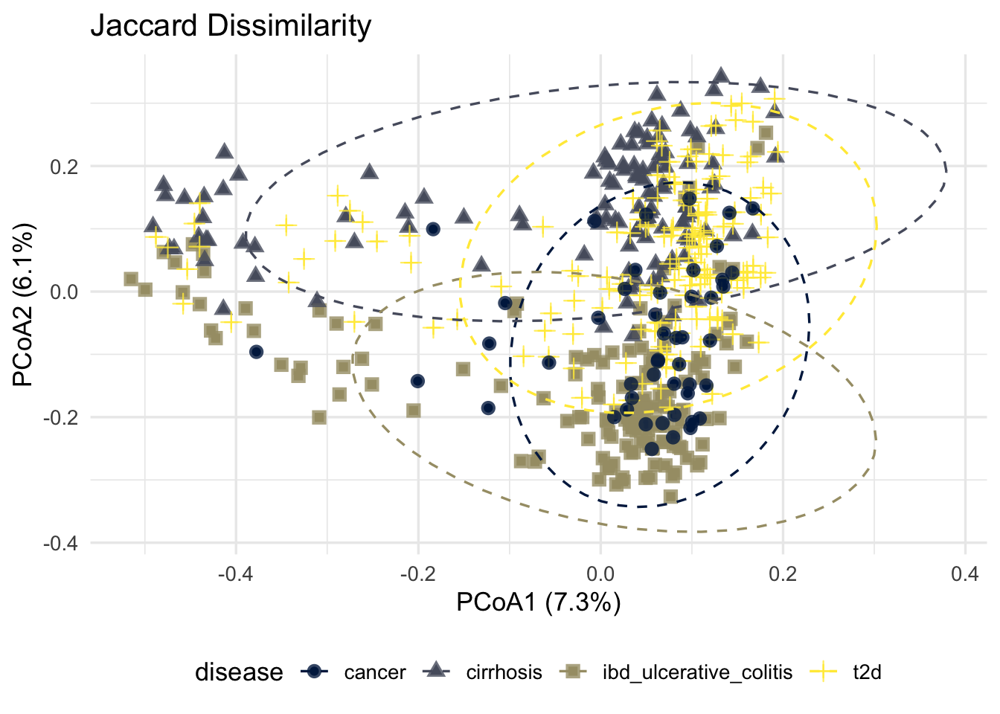
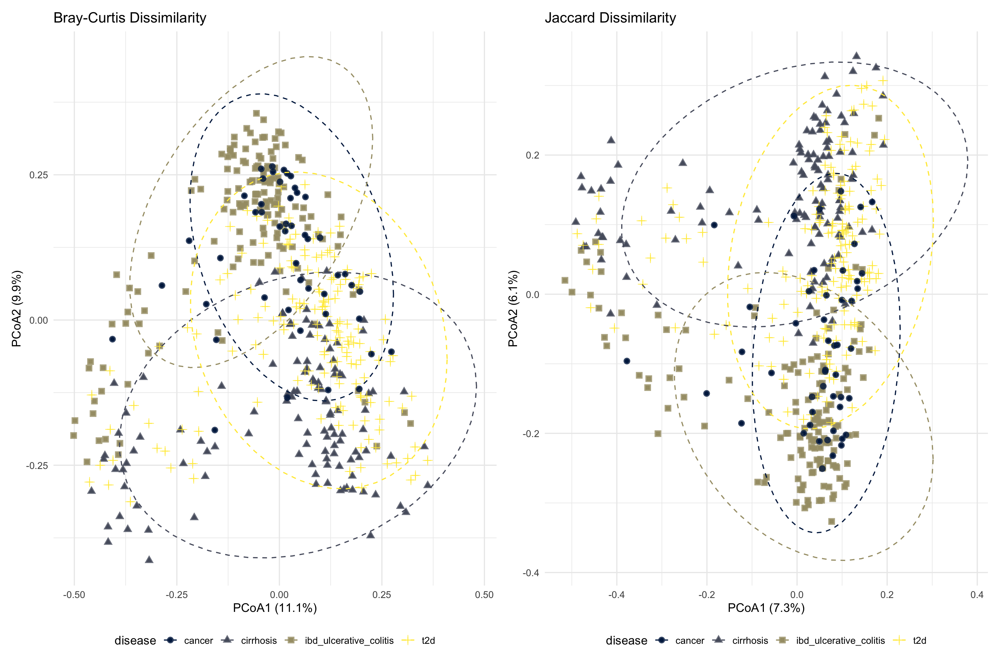
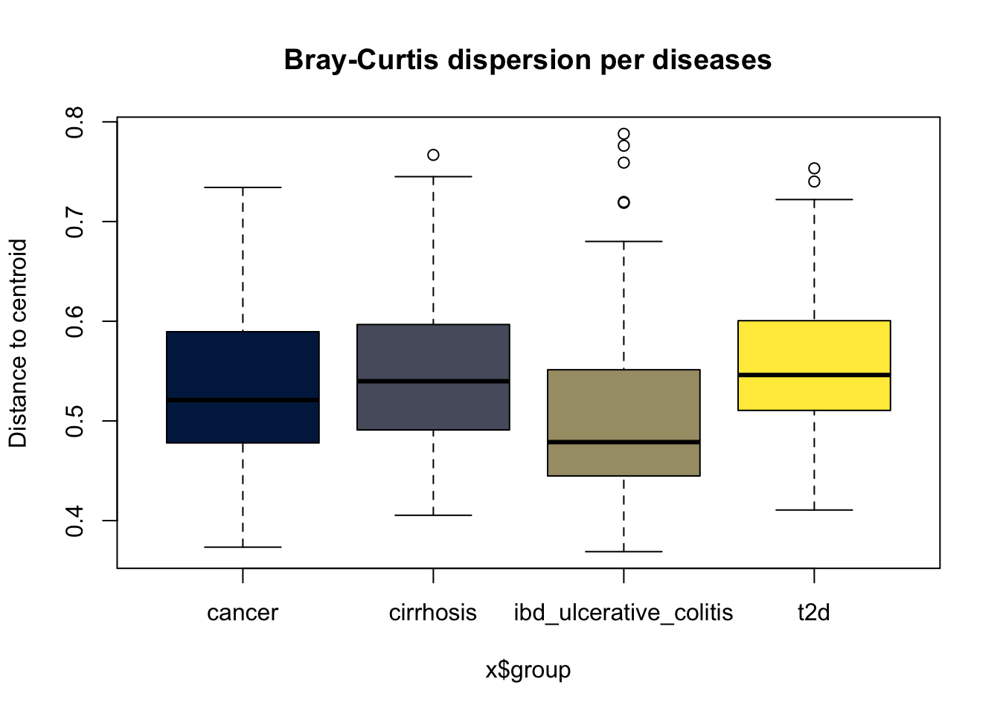

Show code
# Bray-Curtis (abundance‑sensitive)
dist_bray <- distance(metagenomics, method = "bray")
# Jaccard (presence/absence only)
dist_jaccard <- distance(metagenomics, method = "jaccard")Beta diversity quantifies the dissimilarity between pairs of samples. It answers how different are the microbial communities across groups. Unlike alpha diversity (within-sample richness/diversity), beta diversity asks:“How different are microbial communities across samples or disease groups?”
We examine whether gut microbiomes differ significantly between disease groups using two distance metrics. These metrics measure the degree of dissimilarity between pairs of samples but differ in the ecological information they capture.
Bray-Curtis dissimilarity is an abundance-sensitive metric that considers both the presence and relative abundance of taxa within samples. It is widely used in microbiome research because it emphasizes compositional differences driven by changes in dominant organisms. Values range from 0 to 1, where 0 indicates identical community composition and 1 indicates complete dissimilarity. Bray–Curtis is particularly useful for detecting shifts in microbial abundance associated with disease or environmental factors.
\[ BC = \frac{\sum_{i=1}^{n} |p^a_{i} - p^b_{i}|}{\sum_{i=1}^{n} (p^a_{i} + p^b_{i})} \]
\(n\) = total number of species
\(p^a_{i}\) and \(p^b_{i}\) = are the relative abundance of species \(i\) in samples \(a\) and \(b\)
Jaccard distance is a presence–absence based metric that measures differences in taxonomic membership independently of abundance. It evaluates whether the same taxa are shared between samples and is therefore sensitive to taxon turnover rather than abundance variation. This metric is useful for identifying whether disease-associated microbial changes reflect the loss or gain of taxa rather than changes in relative abundance.
\[ J(A,B)=1-\frac{A\cup B}{A\cap B} \]
where \(A\) and \(B\) represent the sets of taxa present in two samples.
Using both Bray–Curtis and Jaccard metrics provides complementary ecological perspectives on microbial community structure. Bray–Curtis captures abundance-driven compositional changes, whereas Jaccard focuses on differences in taxon presence and absence. Together, these approaches allow a more comprehensive assessment of microbiome variation across disease groups.
We first compute distance matrices from relative abundance for each beta diversity metric.
# Bray-Curtis (abundance‑sensitive)
dist_bray <- distance(metagenomics, method = "bray")
# Jaccard (presence/absence only)
dist_jaccard <- distance(metagenomics, method = "jaccard")This method is also known as MDS (Metric Multidimensional Scaling). PCoA provides Euclidean representation of a set of objects whose relationship is measured by any dissimilarity index. This projects the high‑dimensional distance matrix into two dimensions, allowing us to visualize how samples cluster by disease status.
ord_bray <- ordinate(metagenomics, method = "MDS", distance = dist_bray)
# For MDS/PCoA, the ordination object contains eigenvalues
var_exp <- round(ord_bray$values$Eigenvalues / sum(ord_bray$values$Eigenvalues) * 100, 1)
p_bray <- plot_ordination(metagenomics, ord_bray, color = "disease", shape = "disease") +
geom_point(size = 3, alpha = 0.8) +
stat_ellipse(aes(group = disease), linetype = 2, level = 0.95) +
ggtitle("Bray-Curtis Dissimilarity") +
labs(x = paste0("PCoA1 (", var_exp[1], "%)"),
y = paste0("PCoA2 (", var_exp[2], "%)")) +
theme(legend.position = "bottom")
p_bray
ggsave(here("figures", "Beta", "pcoa_bray.pdf"), p_bray)Saving 7 x 5 in imageSamples clustering closely together have more similar microbial compositions. Separation between disease groups suggests differences in microbial community structure associated with disease status.
ord_jaccard <- ordinate(metagenomics, method = "MDS", distance = dist_jaccard)
# For MDS/PCoA, the ordination object contains eigenvalues
var_exp <- round(ord_jaccard$values$Eigenvalues / sum(ord_jaccard$values$Eigenvalues) * 100, 1)
p_jaccard <- plot_ordination(metagenomics, ord_jaccard, color = "disease", shape = "disease") +
geom_point(size = 3, alpha = 0.8) +
stat_ellipse(aes(group = disease), linetype = 2, level = 0.95) +
ggtitle("Jaccard Dissimilarity") +
labs(x = paste0("PCoA1 (", var_exp[1], "%)"),
y = paste0("PCoA2 (", var_exp[2], "%)")) +
theme(legend.position = "bottom")
p_jaccard
ggsave(here("figures", "Beta", "pcoa_jaccard.pdf"), p_jaccard)Saving 7 x 5 in imageJaccard ordination visualizes differences in taxon membership independent of abundance. Group separation indicates disease-associated changes in which taxa are present rather than their relative abundance.
combined_bray_jaccard <- p_bray | p_jaccard
combined_bray_jaccard
ggsave(here("figures", "Beta", "combined_bray_jaccard.pdf"), combined_bray_jaccard)Comparing Bray–Curtis and Jaccard ordination plots reveals whether differences in microbial communities are driven primarily by changes in taxon abundance or by differences in taxon presence and absence. Similar clustering patterns between the two metrics suggest that both community composition and taxon presence differ consistently between disease groups.
We want to use PERMANOVA on both beta diversity metrics but it is sensitive to differences in within‑group dispersion (variance). We test this using betadisper() (multivariate analogue of Levene’s test).
We performed betadisper() on both Bray‑Curtis and Jaccard distance matrices, followed by a permutation test. The test evaluates whether the within‑group dispersion (variance around the group median) differs significantly among the four disease groups.
disp_bray <- betadisper(dist_bray, samples_df$disease)
# pdf("figures/Beta/boxplot_betaDisperson_bray.pdf")
boxplot(disp_bray, col = viridis(4, option = "cividis"), main = "Bray-Curtis dispersion per diseases")
# Permutation test for homogeneity
disp_test_bray <- permutest(disp_bray, permutations = 999)
disp_test_bray
Permutation test for homogeneity of multivariate dispersions
Permutation: free
Number of permutations: 999
Response: Distances
Df Sum Sq Mean Sq F N.Perm Pr(>F)
Groups 3 0.29385 0.097948 18.158 999 0.001 ***
Residuals 480 2.58921 0.005394
---
Signif. codes: 0 '***' 0.001 '**' 0.01 '*' 0.05 '.' 0.1 ' ' 1disp_jaccard <- betadisper(dist_jaccard, samples_df$disease)
boxplot(disp_jaccard, col = viridis(4, option = "cividis"), main = "Jaccard dispersion per diseases")
disp_test_jaccard <- permutest(disp_jaccard, permutations = 999)
disp_test_jaccard
Permutation test for homogeneity of multivariate dispersions
Permutation: free
Number of permutations: 999
Response: Distances
Df Sum Sq Mean Sq F N.Perm Pr(>F)
Groups 3 0.12773 0.042578 18.513 999 0.001 ***
Residuals 480 1.10393 0.002300
---
Signif. codes: 0 '***' 0.001 '**' 0.01 '*' 0.05 '.' 0.1 ' ' 1Both tests are highly significant (p < 0.001), meaning: Only 1 out of 1000 permutations produced an F‑statistic as extreme as the one observed.
This is very strong evidence that the groups do NOT have equal multivariate dispersions. In other words, the within-group variability (how scattered samples are) is not equal across diseases. The assumption of homogeneity of variances is violated for both distance metrics.
To identify which disease groups differed in multivariate dispersion, we performed pairwise comparisons using the betadisper function with 999 permutations.
# Pairwise comparisons
disp_bray <- betadisper(dist_bray, samples_df$disease)
pairwise_bray <- permutest(disp_bray, pairwise = TRUE, permutations = 999)
pairwise_bray
Permutation test for homogeneity of multivariate dispersions
Permutation: free
Number of permutations: 999
Response: Distances
Df Sum Sq Mean Sq F N.Perm Pr(>F)
Groups 3 0.29385 0.097948 18.158 999 0.001 ***
Residuals 480 2.58921 0.005394
---
Signif. codes: 0 '***' 0.001 '**' 0.01 '*' 0.05 '.' 0.1 ' ' 1
Pairwise comparisons:
(Observed p-value below diagonal, permuted p-value above diagonal)
cancer cirrhosis ibd_ulcerative_colitis t2d
cancer 1.9700e-01 1.0000e-02 0.028
cirrhosis 1.8713e-01 1.0000e-03 0.290
ibd_ulcerative_colitis 1.3615e-02 2.4127e-07 0.001
t2d 3.0887e-02 3.0252e-01 1.4536e-11 The IBD group has significantly different dispersion from all other three groups (cancer, cirrhosis, T2D). In contrast, cancer, cirrhosis, and T2D do not differ from each other (except cancer vs T2D is borderline significant at 0.031 – still significant, but weaker).
disp_jaccard <- betadisper(dist_jaccard, samples_df$disease)
pairwise_jaccard <- permutest(disp_jaccard, pairwise = TRUE, permutations = 999)
pairwise_jaccard
Permutation test for homogeneity of multivariate dispersions
Permutation: free
Number of permutations: 999
Response: Distances
Df Sum Sq Mean Sq F N.Perm Pr(>F)
Groups 3 0.12773 0.042578 18.513 999 0.001 ***
Residuals 480 1.10393 0.002300
---
Signif. codes: 0 '***' 0.001 '**' 0.01 '*' 0.05 '.' 0.1 ' ' 1
Pairwise comparisons:
(Observed p-value below diagonal, permuted p-value above diagonal)
cancer cirrhosis ibd_ulcerative_colitis t2d
cancer 2.1300e-01 1.7000e-02 0.019
cirrhosis 2.1996e-01 1.0000e-03 0.190
ibd_ulcerative_colitis 1.4762e-02 6.1841e-07 0.001
t2d 2.1386e-02 1.9695e-01 5.0089e-12 IBD differs significantly from all others (p < 0.02 for each). Cancer vs cirrhosis not significant (p = 0.21), cirrhosis vs T2D not significant (p = 0.196). Cancer vs T2D is significant (p = 0.02). The conclusion is the same for Bray, IBD is the main outlier in terms of dispersion.
Pairwise comparisons revealed that the IBD group had significantly different multivariate dispersion compared to all other diseases (p < 0.05 for all comparisons), while dispersions among cancer, cirrhosis, and type 2 diabetes were largely similar (p > 0.05 except cancer vs T2D). This indicates that the overall heterogeneity in dispersion is primarily attributable to the IBD group.
PERMANOVA (adonis2) is used to test whether the centroids of the groups (disease status) are significantly different in the multivariate space defined by the distance metrics. When dispersions are unequal, a significant PERMANOVA p-value may reflect dispersion differences rather than true centroid differences.
permanova_bray <- adonis2(dist_bray ~ disease,
data = samples_df,
permutations = 999)
print(permanova_bray)Permutation test for adonis under reduced model
Permutation: free
Number of permutations: 999
adonis2(formula = dist_bray ~ disease, data = samples_df, permutations = 999)
Df SumOfSqs R2 F Pr(>F)
Model 3 13.545 0.08694 15.235 0.001 ***
Residual 480 142.253 0.91306
Total 483 155.798 1.00000
---
Signif. codes: 0 '***' 0.001 '**' 0.01 '*' 0.05 '.' 0.1 ' ' 1Disease explains 8.7% of the total variation in community composition (abundance‑sensitive).
Residual (unexplained) = 91.3%.
F = 15.2 – large relative to null permutations.
p = 0.001 – significant
permanova_jaccard <- adonis2(dist_jaccard ~ disease,
data = samples_df,
permutations = 999)
print(permanova_jaccard)Permutation test for adonis under reduced model
Permutation: free
Number of permutations: 999
adonis2(formula = dist_jaccard ~ disease, data = samples_df, permutations = 999)
Df SumOfSqs R2 F Pr(>F)
Model 3 10.497 0.05553 9.4077 0.001 ***
Residual 480 178.528 0.94447
Total 483 189.025 1.00000
---
Signif. codes: 0 '***' 0.001 '**' 0.01 '*' 0.05 '.' 0.1 ' ' 1Disease explains 5.6% of variation (presence/absence only).
Residuals = 94.4%
F = 9.4 – also large.
p = 0.001 – significant.
Both metrics show a statistically significant association between disease status and microbial community dissimilarity. The effect sizes (R²) are small. Bray‑Curtis explains more variation than Jaccard (8.7% vs 5.6%), suggesting that abundance differences are more discriminative than just presence/absence.
Both PERMANOVA and beta dispersion tests were significant (p = 0.001 for both Bray‑Curtis and Jaccard). This indicates that disease status is associated with differences in both the average microbial community composition and the within‑group variability.
Pairwise PERMANOVA is a post‑hoc test used after a significant PERMANOVA (which tells you “at least one group differs”). It performs separate PERMANOVA tests on each combination of two groups (e.g., cancer vs cirrhosis, cancer vs IBD, etc.) to determine which specific pairs of groups are significantly different from each other.
pairwise_permanova_bray <- pairwise.adonis2(dist_bray ~ disease, data = samples_df, nperm = 999)
pairwise_permanova_bray$parent_call
[1] "dist_bray ~ disease , strata = Null , permutations 999"
$ibd_ulcerative_colitis_vs_cirrhosis
Df SumOfSqs R2 F Pr(>F)
Model 1 8.439 0.10189 29.95 0.001 ***
Residual 264 74.385 0.89811
Total 265 82.824 1.00000
---
Signif. codes: 0 '***' 0.001 '**' 0.01 '*' 0.05 '.' 0.1 ' ' 1
$ibd_ulcerative_colitis_vs_t2d
Df SumOfSqs R2 F Pr(>F)
Model 1 6.190 0.06307 21.272 0.001 ***
Residual 316 91.961 0.93693
Total 317 98.151 1.00000
---
Signif. codes: 0 '***' 0.001 '**' 0.01 '*' 0.05 '.' 0.1 ' ' 1
$ibd_ulcerative_colitis_vs_cancer
Df SumOfSqs R2 F Pr(>F)
Model 1 1.401 0.02622 5.224 0.001 ***
Residual 194 52.019 0.97378
Total 195 53.419 1.00000
---
Signif. codes: 0 '***' 0.001 '**' 0.01 '*' 0.05 '.' 0.1 ' ' 1
$cirrhosis_vs_t2d
Df SumOfSqs R2 F Pr(>F)
Model 1 3.473 0.03707 11.009 0.001 ***
Residual 286 90.234 0.96293
Total 287 93.708 1.00000
---
Signif. codes: 0 '***' 0.001 '**' 0.01 '*' 0.05 '.' 0.1 ' ' 1
$cirrhosis_vs_cancer
Df SumOfSqs R2 F Pr(>F)
Model 1 3.811 0.07044 12.428 0.001 ***
Residual 164 50.292 0.92956
Total 165 54.103 1.00000
---
Signif. codes: 0 '***' 0.001 '**' 0.01 '*' 0.05 '.' 0.1 ' ' 1
$t2d_vs_cancer
Df SumOfSqs R2 F Pr(>F)
Model 1 1.995 0.02855 6.3486 0.001 ***
Residual 216 67.867 0.97145
Total 217 69.862 1.00000
---
Signif. codes: 0 '***' 0.001 '**' 0.01 '*' 0.05 '.' 0.1 ' ' 1
attr(,"class")
[1] "pwadstrata" "list" pairwise_permanova_jaccard <- pairwise.adonis2(dist_jaccard ~ disease, data = samples_df, nperm = 999)
pairwise_permanova_jaccard$parent_call
[1] "dist_jaccard ~ disease , strata = Null , permutations 999"
$ibd_ulcerative_colitis_vs_cirrhosis
Df SumOfSqs R2 F Pr(>F)
Model 1 6.357 0.06261 17.633 0.001 ***
Residual 264 95.182 0.93739
Total 265 101.539 1.00000
---
Signif. codes: 0 '***' 0.001 '**' 0.01 '*' 0.05 '.' 0.1 ' ' 1
$ibd_ulcerative_colitis_vs_t2d
Df SumOfSqs R2 F Pr(>F)
Model 1 4.863 0.04015 13.217 0.001 ***
Residual 316 116.271 0.95985
Total 317 121.134 1.00000
---
Signif. codes: 0 '***' 0.001 '**' 0.01 '*' 0.05 '.' 0.1 ' ' 1
$ibd_ulcerative_colitis_vs_cancer
Df SumOfSqs R2 F Pr(>F)
Model 1 1.247 0.01798 3.5525 0.001 ***
Residual 194 68.108 0.98202
Total 195 69.356 1.00000
---
Signif. codes: 0 '***' 0.001 '**' 0.01 '*' 0.05 '.' 0.1 ' ' 1
$cirrhosis_vs_t2d
Df SumOfSqs R2 F Pr(>F)
Model 1 2.65 0.02344 6.8636 0.001 ***
Residual 286 110.42 0.97656
Total 287 113.07 1.00000
---
Signif. codes: 0 '***' 0.001 '**' 0.01 '*' 0.05 '.' 0.1 ' ' 1
$cirrhosis_vs_cancer
Df SumOfSqs R2 F Pr(>F)
Model 1 2.894 0.04442 7.6238 0.001 ***
Residual 164 62.257 0.95558
Total 165 65.151 1.00000
---
Signif. codes: 0 '***' 0.001 '**' 0.01 '*' 0.05 '.' 0.1 ' ' 1
$t2d_vs_cancer
Df SumOfSqs R2 F Pr(>F)
Model 1 1.629 0.01917 4.2207 0.001 ***
Residual 216 83.346 0.98083
Total 217 84.974 1.00000
---
Signif. codes: 0 '***' 0.001 '**' 0.01 '*' 0.05 '.' 0.1 ' ' 1
attr(,"class")
[1] "pwadstrata" "list" Pairwise PERMANOVA (999 permutations) revealed that all disease groups were significantly different from each other for both Bray‑Curtis (p = 0.001 for all comparisons) and Jaccard (p = 0.001 for all comparisons) distances. However, because the PERMDISP test showed heterogeneous multivariate dispersions (driven primarily by the IBD group), the significant pairwise PERMANOVA results may reflect a combination of differences in both centroid location and within‑group dispersion.
# Create a summary table
library(knitr)
results_df <- data.frame(
Metric = c("Bray-Curtis", "Jaccard"),
R2 = c(round(permanova_bray$R2[1], 3), round(permanova_jaccard$R2[1], 3)),
F = c(round(permanova_bray$F[1], 2), round(permanova_jaccard$F[1], 2)),
`p-value` = c(format(permanova_bray$`Pr(>F)`[1], digits = 4),
format(permanova_jaccard$`Pr(>F)`[1], digits = 4)),
`Dispersion p-value` = c(format(disp_test_bray$tab$`Pr(>F)`[1], digits = 4),
format(disp_test_jaccard$tab$`Pr(>F)`[1], digits = 4))
)
# Extract pairwise PERMANOVA results into data frames
extract_pairwise_permanova <- function(pairwise_output, metric_name) {
# Identify which list elements are data frames (exclude fdr, etc.)
is_df <- sapply(pairwise_output, is.data.frame)
comp_names <- names(pairwise_output)[is_df]
do.call(rbind, lapply(comp_names, function(comp) {
res <- pairwise_output[[comp]]
# Ensure required columns exist
if (all(c("R2", "F", "Pr(>F)") %in% colnames(res))) {
data.frame(
Comparison = comp,
R2 = round(res$R2[1], 4),
F = round(res$F[1], 2),
P_value = res$`Pr(>F)`[1],
Distance = metric_name,
stringsAsFactors = FALSE
)
} else {
NULL
}
}))
}
kable(results_df, caption = "PERMANOVA and beta dispersion test results")| Metric | R2 | F | p.value | Dispersion.p.value |
|---|---|---|---|---|
| Bray-Curtis | 0.087 | 15.23 | 0.001 | 0.001 |
| Jaccard | 0.056 | 9.41 | 0.001 | 0.001 |
The table summarizes:
effect size (R²)
PERMANOVA significance
homogeneity of dispersion testing
Higher R² values indicate stronger disease-associated microbial differences.
Beta diversity was assessed using Bray–Curtis and Jaccard distance metrics. Principal Coordinate Analysis (PCoA) was used to visualize microbial community differences between disease groups. Group differences were evaluated using PERMANOVA (adonis2, 999 permutations). A key assumption of PERMANOVA is homogeneity of multivariate dispersions. We check this with a beta dispersion test. Homogeneity of multivariate dispersion was assessed using betadisper() followed by permutation testing. Pairwise dispersion testing and pairwise PERMANOVA were evaluated to identify which disease groups differed in dispersion.
Beta diversity analysis revealed significant differences in microbial community composition between disease groups.
Bray–Curtis explained more variation than Jaccard, suggesting that abundance shifts contributed more strongly than simple taxon presence/absence.
Significant PERMANOVA results indicate disease-associated differences in microbiome composition.
Significant beta dispersion tests indicate unequal within-group variability, primarily due to the IBD group differing in variance from the others.
Nevertheless, the consistent pairwise PERMANOVA results suggest true differences in community composition across diseases.
sessioninfo::session_info(pkgs = "attached")─ Session info ───────────────────────────────────────────────────────────────
setting value
version R version 4.6.0 (2026-04-24)
os macOS Tahoe 26.4
system aarch64, darwin23
ui X11
language (EN)
collate en_US.UTF-8
ctype en_US.UTF-8
tz Europe/Paris
date 2026-05-26
pandoc 3.9.0.2 @ /opt/homebrew/bin/ (via rmarkdown)
quarto 1.8.27 @ /usr/local/bin/quarto
─ Packages ───────────────────────────────────────────────────────────────────
package * version date (UTC) lib source
broom * 1.0.13 2026-05-14 [1] CRAN (R 4.6.0)
cluster * 2.1.8.2 2026-02-05 [1] CRAN (R 4.6.0)
dplyr * 1.2.1 2026-04-03 [1] CRAN (R 4.6.0)
forcats * 1.0.1 2025-09-25 [1] CRAN (R 4.6.0)
FSA * 0.10.1 2026-01-10 [1] CRAN (R 4.6.0)
ggplot2 * 4.0.3 2026-04-22 [1] CRAN (R 4.6.0)
gridExtra * 2.3 2017-09-09 [1] CRAN (R 4.6.0)
here * 1.0.2 2025-09-15 [1] CRAN (R 4.6.0)
igraph * 2.3.1 2026-05-04 [1] CRAN (R 4.6.0)
knitr * 1.51 2025-12-20 [1] CRAN (R 4.6.0)
lubridate * 1.9.5 2026-02-04 [1] CRAN (R 4.6.0)
pairwiseAdonis * 0.4.1 2026-05-24 [1] Github (pmartinezarbizu/pairwiseAdonis@cb190f7)
patchwork * 1.3.2 2025-08-25 [1] CRAN (R 4.6.0)
permute * 0.9-10 2026-02-06 [1] CRAN (R 4.6.0)
phyloseq * 1.56.0 2026-04-28 [1] Bioconductor 3.23 (R 4.6.0)
purrr * 1.2.2 2026-04-10 [1] CRAN (R 4.6.0)
readr * 2.2.0 2026-02-19 [1] CRAN (R 4.6.0)
readxl * 1.5.0 2026-05-16 [1] CRAN (R 4.6.0)
SpiecEasi * 2.0.0 2026-04-28 [1] Bioconductor 3.23 (R 4.6.0)
stringr * 1.6.0 2025-11-04 [1] CRAN (R 4.6.0)
tibble * 3.3.1 2026-01-11 [1] CRAN (R 4.6.0)
tidyr * 1.3.2 2025-12-19 [1] CRAN (R 4.6.0)
tidyverse * 2.0.0 2023-02-22 [1] CRAN (R 4.6.0)
vegan * 2.7-3 2026-03-04 [1] CRAN (R 4.6.0)
viridis * 0.6.5 2024-01-29 [1] CRAN (R 4.6.0)
viridisLite * 0.4.3 2026-02-04 [1] CRAN (R 4.6.0)
[1] /Library/Frameworks/R.framework/Versions/4.6/Resources/library
* ── Packages attached to the search path.
──────────────────────────────────────────────────────────────────────────────